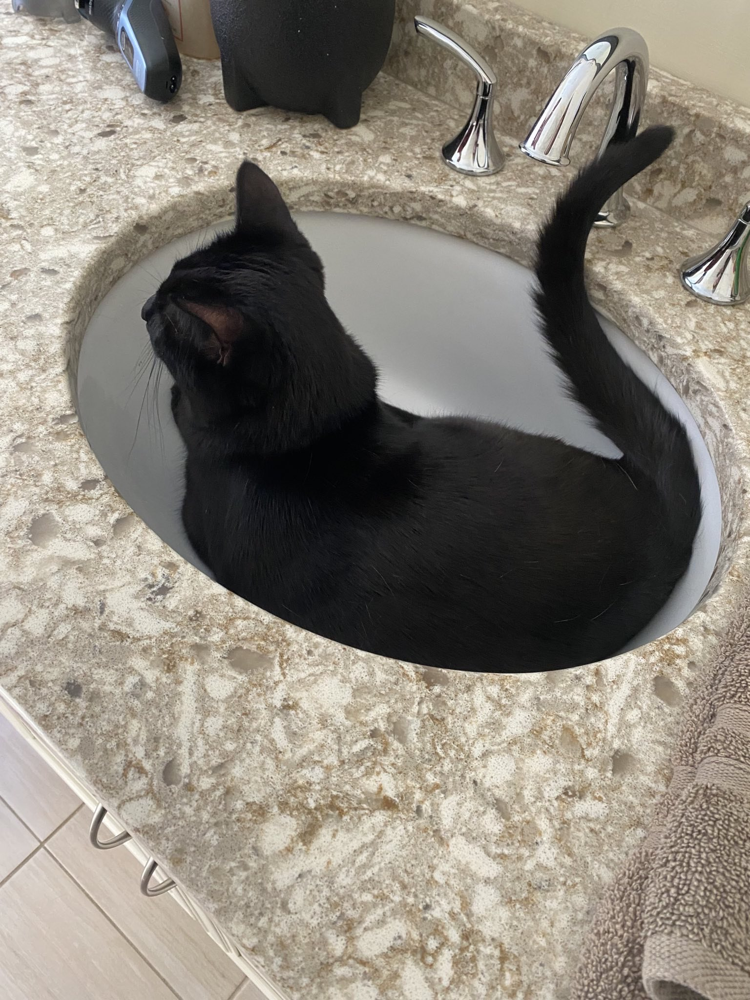

- Music
- Pets
- Games
- Shows
Music - Currently my favorite music is a toss-up between the Vocaloid or J-Pop. I love artists like Eve, Jin, and Ado and my favorite two cover artists are Will Stetson and Trickle. Part of what I love so much about these genres are how diverse they are, there are never two songs that have the same meaning and the artists are so creative with how they express their thoughts into song.
Pets - Milo and Sadie are currently our only two pets, but I've been thinking of adopting another cat for myself. We've tried to figure out why Milo likes the sink better than his bed but were unsuccessful.

Games - I really like playing ttrpgs and card games, D&D is an obvious example but games like Exploding Kittens (It's as crazy as it sounds) and Munchkin are a ton of fun! I've played the Pokemon TCG and a little bit of Magic the Gathering as well.
Shows/Movies - Unfortunately I don't have much time to watch full movies and tv shows, but I love watching people review them and talk about them. Some of my favorites that I've watched are Chainsaw Man, Oddtaxi, Mekakucity Actors, Jujutsu Kaisen, Mob Psycho 100, and Jack Ryan. (Funny, only one of those wasn't an anime!)